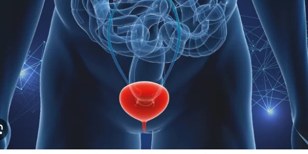

The Bladder
The urinary bladder is a hollow, stretchy organ in the lower part of your abdomen that stores urine before it leaves your body through your urethra. Conditions that affect your bladder include incontinence, cystitis and bladder stones. They can make urinating painful, difficult or uncontrollable.
What is the bladder?
The urinary bladder is a hollow, spherical-shaped organ that holds urine (pee). For most people, it can hold 500-700 mL (about two cups) of pee. When you need to use the restroom, muscles in your bladder contract (tighten) and sphincter muscles in your urethra relax, allowing pee to flow out of your body. The bladder is part of your urinary system.
Function What does the bladder do?
Your bladder holds pee. Your kidneys filter your blood and remove materials such as salt, water, toxins and waste products through pee. As your bladder fills with pee, it expands like a balloon. When it fills with 200-350 mL of pee, nerves in your bladder tell your brain to use the toilet. When you pee, your bladder shrinks back down. Most people pee about 950-1,900 mL (about two quarts) each day.
Anatomy Where is the bladder located?
The bladder is in the lower part of your abdomen (belly). Bands of tissues (ligaments) connect the bladder to other organs and your hip bone (pelvis), which keeps it in place. In men and people assigned male at birth (AMAB), it rests between the pubic bone in the front and the rectum in the back. In women and people assigned female at birth (AFAB), it rests in front of the vagina and uterus.
What are the parts of the bladder?
Four parts make up the structure (anatomy) of the bladder: Dome. The dome, or apex, is the top-front part of your bladder. It points toward your abdominal wall. Base. The base is the bottom-back part of your bladder, also referred to as the fundus. Body. The bladder body makes up the area between the dome and the base. Neck. The bladder neck is along the base of your bladder. It’s a narrow group of muscles that connect to your urethra.
What does the bladder look like?
The bladder is pink or dark pink. It’s about 2 inches when empty but can stretch to 6 inches when full. It consists of three main layers: Urothelium. This is the inner lining of your bladder that prevents pee from leaking into your body. Lamina propria (submucosa). Lamina propria is a thin layer of loose connective tissue. It consists of structural protein molecules, blood vessels and nerves. Muscularis propria. This is the thick muscle layer on the outside of your bladder. It consists of three layers of smooth muscle. Smooth muscles are muscles that tighten and relax automatically.
Conditions and Disorders What are common bladder issues?
Common conditions that affect the bladder include: Bladder cancer. Bladder cancer is a form of cancer that causes cells in your bladder to grow uncontrollably. It typically starts in the cells of your urothelium. Cystitis. Cystitis is a bacterial infection that causes inflammation in your bladder. It’s the most common type of urinary tract infection (UTI). Interstitial cystitis/bladder pain syndrome (IC/BPS). IC/BPS is a long-term condition that causes pain in your bladder and frequent or sudden urges to pee. Overactive bladder. This condition causes you to pee more often or leak pee unintentionally. Urinary incontinence. Urinary incontinence is when you can’t control your bladder. Pee leaks out when you’re not ready to go. Bladder stones. Bladder stones are clumps of minerals that form in your bladder. They typically affect people who have a hard time completely emptying their bladders.
How do you know if something is wrong with your bladder?
Common signs or symptoms of conditions that may affect your bladder include: Loss of bladder control. Burning sensation or pain while peeing. Cloudy pee. Bloody pee. Peeing more than is normal for you. Feeling like you can’t completely empty your bladder when you go to the bathroom. Strong- or foul-smelling pee. Pain during sex (dyspareunia).
What are some common tests to check the health of the bladder?
Healthcare providers use many tests to see how well your bladder works and diagnose bladder problems. Your provider may recommend: Urinalysis (urine test). You’ll pee into a special cup, and a provider will analyze its visual, chemical and microscopic elements. Urine culture. You’ll pee into a special cup, and a provider will test it for bacteria or yeast. Imaging tests. Imaging tests create detailed pictures of your bladder. They may include an ultrasound or a computed tomography (CT) scan, magnetic resonance imaging (MRI) or ultrasound. Cytology. A provider will collect cells from your bladder and examine them for signs of cancer. Cystoscopy. This procedure uses a thin, lighted tube with a camera at the end (cystoscope) to look at the inside of your bladder. Urodynamic testing. Urodynamic testing involves several different tests that measure how well your bladder and other parts of your urinary tract store and release pee. Biopsy. A provider will remove cells, tissue, fluids or a growth from your bladder and examine it at a laboratory. Providers usually order a biopsy to diagnose or rule out cancer.
How can I fix my bladder problem?
Bladder treatments depend on your symptoms and a healthcare provider’s official diagnosis. Common bladder treatments may include: Medications, including antibiotics. Diet changes. Physical therapy. Behavioral changes. Retraining your bladder. Surgery.
Care Does drinking water help with bladder problems?
It depends on what your bladder condition is. Water is important in flushing wastes and bacteria out of your urinary tract, and drinking more water can help dilute your pee. Concentrated pee can irritate your bladder and make your symptoms worse. A healthcare provider will tell you if drinking more water will help with your bladder problem and how much you should drink.
What beverages should I avoid if I have bladder problems?
The following beverages and fluids may cause bladder irritation: Alcohol. Coffee. Carbonated drinks. Tea. Acidic fruit juices, including orange juice, grapefruit juice, pineapple juice and lemon juice. Tomato juice. Hot sauces. Vinegar.
What vitamins help with bladder control?
The following vitamins may help reduce sudden urges to pee or decrease your risk of incontinence: Vitamin C. Vitamin C from foods and beverages may help reduce sudden urges to pee. Good sources include citrus fruits, peppers, broccoli and leafy greens. However, high doses of vitamin C tablets may contribute to incontinence. Vitamin D. Many people get vitamin D from sun exposure, but you can also get it from dairy products, fish and eggs. It’s a good idea to talk to a provider before starting vitamin supplements to make sure they’re safe for you to take.
A note from Cleveland Clinic
Your urinary bladder is a stretchy, hollow organ that stores pee until it leaves your body. Many conditions may affect your bladder, and some symptoms may be painful, inconvenient or embarrassing. If you have symptoms of a bladder condition, healthcare providers can help identify the cause and treat your symptoms. Return to previous page